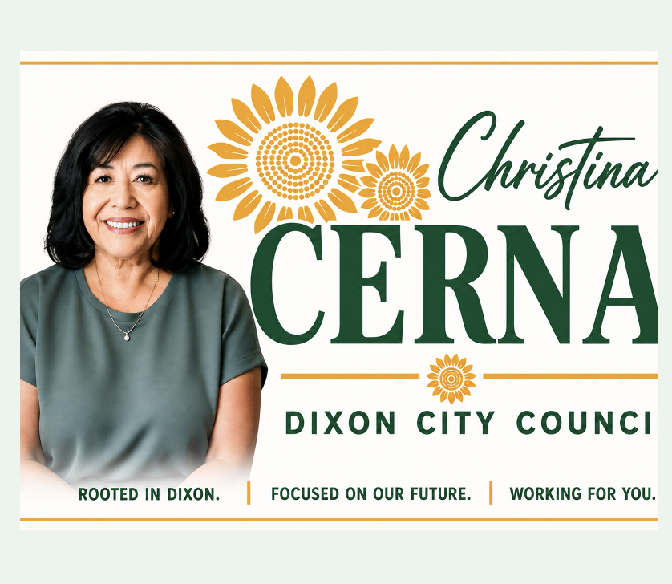
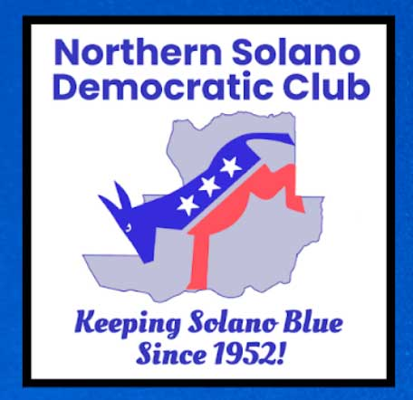
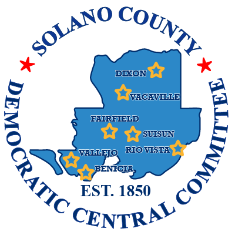
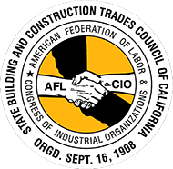
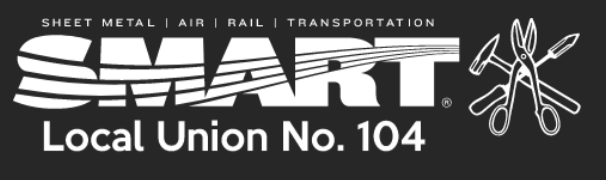
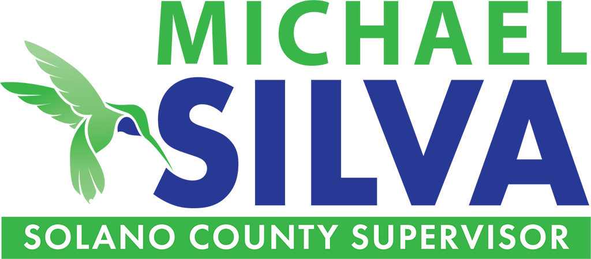
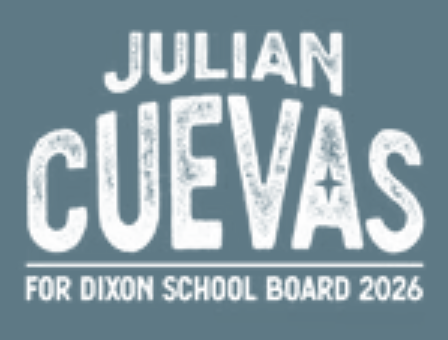

Organizer · Uptown Collective
Christina's work supports local women entrepreneurs. Learn more

Rooted in Dixon. Focused on Our Future. Working for You.
Explore the Issues Get in Touch
Christina Cerna is a lifelong and active member of our community. Raised on her family’s ranch in Dixon, and a graduate of Dixon High School, she went on to earn a degree from the University of the Pacific before returning to her hometown as an entrepreneur and business owner. Her local roots and connection to the community have shaped her commitment to preserving Dixon’s small-town character, while also ensuring residents have a meaningful voice in its future.
Why vote for Christina to represent you on the Dixon City Council? Because she believes that community members deserve to be heard on issues that affect their daily lives - particularly as Dixon continues to grow. Like many Dixon residents, Christina wants to make sure that infrastructure improvements, responsible growth, and farmland protection remain top priorities for our city government.
As a candidate for Dixon City Council, Christina is committed to working hard on behalf of residents and helping ensure that decisions about Dixon’s future reflect the needs, concerns, and values of the people who call it home. Vote for Christina as your new Dixon City Council District 2 representative!
Christina's work supports local women entrepreneurs. Learn more
Christina is a member of the 2026 DDBA Board of Directors. Learn more
Ensuring Dixon residents have a voice on issues that matter most for their families and futures.
Our campaign advocates for safer roads, sidewalks, and pathways for pedestrians and children walking or bicycling to school. Christina supports infrastructure improvements that strengthen emergency preparedness like the Parkway Boulevard Overcrossing.
Dixon residents desperately want a meaningful voice in large-scale development decisions. Christina's campaign promotes thoughtful planning that addresses increased traffic, public safety, and infrastructure needs while respecting the community’s history as an agricultural powerhouse.
Learn more about Keep Dixon Green.
We strive to protect Dixon’s farmland, open spaces, and natural habitats while preserving the charming, small-town character of the community. Christina has a plan to pursue additional funding opportunities to help meet local needs and support a healthy quality of life for current and future residents.
Read Christina's letter in support of Dixon's 45-day data center moratorium.
The following groups and organizations have endorsed Christina Cerna for Dixon City Council:
Solano Orderly Growth endorses local candidates who support protection of farmland and open space in Solano County.
View endorsement
Sierra Club California is the legislative and regulatory advocacy arm for Sierra Club chapters in California.

Northern Solano Democratic Club is an active group that attracts like-minded Democrats who want to work for change.
View endorsement
The NSCLC works to elect candidates to public office who support labor standards and will stand by working people.
View endorsement

The Solano Democrats endorse local candidates for office whose priorities are in line with the national Democratic party.
View endorsement

As the California affiliate of North America’s Building Trades Unions (NABTU), the California Building Trades has 157 affiliated unions.

Sheet Metal Workers' Local Union No. 104 spans 49 California counties from the Oregon border to Ventura County.
View endorsement

The campaign to elect Mike Silva as Solano County Supervisor endorses Christina Cerna for Dixon City Council.
More info

The campaign to elect Julian Cuevas to the Dixon Unified School Board endorses Christina Cerna for Dixon City Council.
More info
Want to stay in touch or lend your support to the campaign to elect Christina Cerna to Dixon City Council? Connect with us!
Email: cernafordixon@gmail.com
Social: Facebook
Interested in supporting the campaign financially? Contact us today for information about contributing.
Contact the Campaign